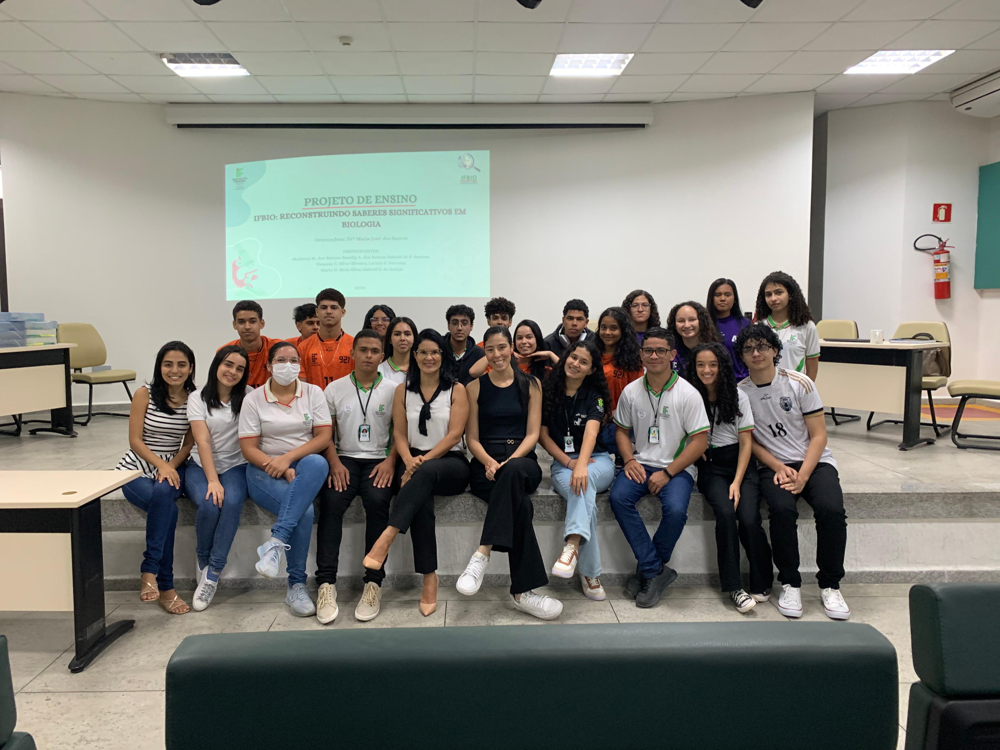
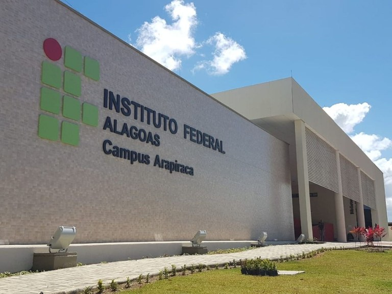

.png)
INTRODUÇÃO
O projeto "IFBIO: Reconstruindo Saberes Significativos em Biologia" visa preencher as lacunas educacionais resultantes da suspensão das atividades do calendário acadêmico do presente ano, no que se refere ao estudo da Biologia. Durante a suspensão das atividades presenciais, muitos discentes apresentaram dificuldades em desenvolver plenamente suas habilidades acadêmicas e sociais, comprometendo o seu desempenho escolar e o bem-estar emocional. Este projeto é de grande importância no contexto educacional e científico atual, pois propõe um plano estruturado para recuperar e desenvolver essas habilidades, garantindo que retomem seus estudos em Biologia com maior confiança e competência. O objetivo do projeto é recuperar o desenvolvimento de habilidades acadêmicas e sociais dos estudantes afetados pela suspensão do calendário acadêmico, afim de impulsionar o desenvolvimento da educação científica e o interesse pela Biologia dos alunos do IFAL - Campus Arapiraca. As atividades serão desenvolvidas no laboratório de Biologia e Química do IFAL – Campus Arapiraca ou em campo, como uma visita técnica na Vale Verde em Craíbas, no Centro de Educação Ambiental. Participaram estudantes do primeiro ano do ensino médio, dos cursos de Informática e Eletroeletrônica, cujas atividades serão desenvolvidas no turno matutino, em um período de quatro meses, com carga horária de 12 horas semanais. As atividades contribuirão para preencher as lacunas resultantes da suspensão das atividades e do processo de ensino-aprendizagem na Biologia. Garantindo assim, que os alunos retomem seus estudos na Biologia com maior êxito.
OBJETIVO GERAL
● Recuperar o desenvolvimento de habilidades acadêmicas e sociais dos estudantes
afetados pela suspensão dos calendários acadêmicos, afim de impulsionar o
desenvolvimento da educação científica e o interesse pela Biologia nos alunos do
IFAL - Campus Arapiraca.
OBJETIVOS ESPECÍFICOS
● Evidenciar as atividades experimentais/investigativas e afins em Biologia que
podem proporcionar a aprendizagem significativa dos conteúdos estudados;
● Diagnosticar as principais lacunas de aprendizado e habilidades não desenvolvidas
durante o período de suspensão.
● Utilizar tecnologias educacionais como recursos de aprendizagem flexíveis e
acessíveis;
● Estimular o interesse dos estudantes pela Biologia, além de amenizar a lacuna na
carga horária do primeiro ano;
● Escrever um artigo científico no formato de relato de experiência que registre todos
os métodos usados e os resultados dessas ações na realização neste projeto e
também um site para a divulgação do mesmo;
● Realizar ações de pesquisa e extensão nas atividades propostas, se possível;
METODOLOGIA
As atividades do projeto acontecerão em um período de 4 meses, turno matutino, semanalmente
(12h) em duas turmas, no IFAL - Campus Arapiraca, no Laboratório de Biologia e Química ou em
uma sala de aula, como também poderá ocorrer visitas técnicas (Vale Verde em Craíbas, no Centro Educação de Ambiental) ou outras atividades externas (Mostra científica em Biologia). As
turmas contempladas serão os primeiros anos do curso de Informática e Eletroeletrônica (921 e
421). O mesmo contará com a colaboração de um bolsista e voluntários para o
desenvolvimento das mesmas. Os módulos de conteúdos serão sobre Introdução à Microscopia;
Citologia e Organelas; Metabolismo Energético e Respiração Celular; Fotossíntese e
Quimiossíntese; Ecologia, onde acontecerá uma introdução sobre os temas e, posteriormente o
desenvolvimento dos experimentos práticos/investigativos, jogos lúdicos, oficinas de mapas
conceituais e dinâmicas em equipe, visitas técnicas ou outras atividades de ensino e, também será
realizada uma abordagem geral do ensino (atividades) de Biologia voltado para o Exame Nacional
do Ensino Médio (ENEM). Ressalta-se que antes e depois dos conteúdos/atividades dos módulos
serão aplicados questionários pré-teste e pós-teste para aferir um conhecimento prévio e a
contribuição da aprendizagem em Biologia, levando em consideração os impactos do período de
suspensão dos calendários acadêmicos.
Segue um resumo dos experimentos e atividades a serem realizadas:
Experimentos/Atividades da Aula Inaugural
● Kahoot sobre biologia geral
● Dinâminca da batata-quente
● Dinâmica de torta na cara
Experimentos/Atividades de Introdução a Microscopia
● Aula teórica ( Definição e história do microscópio, tipos, estrutura e funcionamento)
● Microscópio;
● Aula prática com microscópio;
Experimentos/Atividades de Citologia e Organelas
● Aula teórica (Definição e história da citologia, estrutura celular, componentes
básicos da célula eucarionte e procarionte, organelas celulares, ciclo celular e
divisão, diferença da celula animal e vegetal);
● Pint Of Science com as organelas celulares;
● Aula Prática de Permeabilidade da Membrana Plasmática;
● Bingo de biologia celular
● Cruzadinha da membrana plasmática
Experimentos/Atividades de Metabolismo Energético, Fotossíntese
● Aula teórica (Definição de metabolismo energético e respiração celular, princípios
de bioenergética, processos metabólicos, regulação do metabolismo energético,
aplicação e importância) ;
● Pré-Teste e Pós-Teste de metabolismo energético e respiração celular;
● Observação da célula vegetal (Élodea), parede celular, cloroplastos e estomatos;
● Extração da clorofila e cromatografia
Experimentos/Atividades de Ecologia
● Aula teórica ( Definição de ecologia, conceitos básicos, relações ecológicas,
ecossistemas, biomas,poluição e efeito estufa);
● Jogo treme-ecobio;
● Simulação de “júri” sobre o acidente do Césio-137;
● Aula prática (no laboratório/viagem).
Os jogos didáticos aplicados serão confeccionados pelos discentes com material
solicitado à coordenação e aplicados no instituto como forma de fixação do conteúdo.
Dentre eles estão:
● Batalha naval de microscopia;
● Quebra-cabeça;
● Jogo do balão;
● Jogo do treme-ecobio.
LOCAL DE DESENVOLVIMENTO
IFAL- Campus Arapiraca, no Laboratório de Biologia e Química ou na sala de aula 7.
RESULTADOS E IMPACTOS ESPERADOS
● Contribuir com a recuperação da aprendizagem significativa no que se refere a Biologia, resultante
da suspensão das atividades acadêmicas, afim de que os alunos desenvolvam de uma forma ampla
a compreensão sobre conceitos e teorias, sobre o processo de produção de conhecimento e sobre
as relações entre ciência, tecnologia, sociedade e ambiente.
● Preencher a lacuna que foi criada com a redução da carga horária do curso que antes eram quatro
anos e passaram a ser três, diminuindo assim a carga horária de Biologia, causando um impacto e
um prejuízo, principalmente na aprendizagem dos alunos do primeiro ano que passaram a ter
apenas uma aula de Biologia de 50 minutos, não tendo tempo suficiente de colocar em prática os
conhecimentos adquiridos;
● Estimular a criatividade, a curiosidade e o pensamento crítico dos estudantes em relação à ciência;
● Utilizar modelos inclusivos para promover uma experiência equitativa na implementação da
iniciativa;
● Ao bolsista e aos voluntários, espera-se que eles desenvolvam habilidades de liderança, empatia,
criatividade, comunicação, de pensamento crítico, além das habilidades de escrita e com software
(produção de um site do projeto) para construção de textos e fichas de estudo (redação do relato
de experiência).